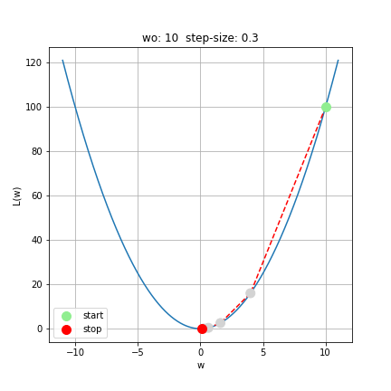
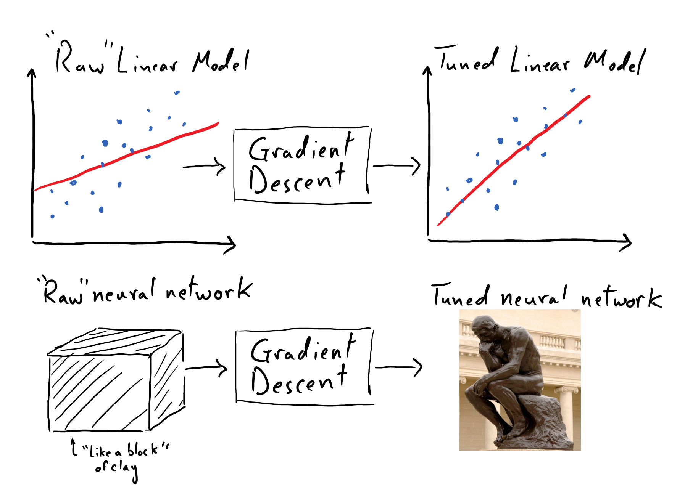

Background Material:
It is highly recommended that the reader work through the introductions to single variable calculus and multivariable calculus as a supplement to this section. These materials make accessible the most fundamental aspects of calculus needed to get a firm grasp on gradient-based learning. Even if you are already familiar with calculus, these sections also provide an introduction to automatic differentiation, which will be a critical technology for us moving forward.
Computing Gradients with Automatic Differentiation¶
Introduction
(exercise) code up auto differentiation
(exercise) redo descent down parabola and paraboloid
(advanced) limitations of autodiff -lohopital
Reading Comprehension: Retracing Our Steps:
Given a simple linear model
Assuming that we have \(N\) pieces of recorded observations and associated “true” outcomes, \((x_n, y_n)_{n=0}^{N-1}\), write the “mean-squared error” loss function in terms of the model’s parameters, and the individual pieces of data.
Refer back to the section on linear regression for a refresher on this particular loss function.
See that the sequence of \(w\) values indeed corresponds to a “descent” down \(\mathscr{L}(w)\), towards \(w=0\).

Notice that even though the so-called learning rate, \(\delta=0.3\), is constant, the distance between subsequent \(w\)-values gets shorter as they near \(w_\mathrm{min}\); this is due to the fact that \(\frac{\mathrm{d}\mathscr{L}}{\mathrm{d}w}\), which multiplies \(\delta\), naturally shrinks in magnitude near the minimum (i.e. the slope approaches zero), and thus the update to \(w_\mathrm{old}\) becomes more “refined” in its vicinity.
We stopped the gradient descent process where we did out of sheer convenience; we don’t usually carry our gradient descent by hand – we will have a computer do the hard work for us! The terminal value of \(w_\mathrm{stop} = 0.1024\) isn’t necessarily sufficiently close to the true minimum of the parabola, but we cannot make a decision about this in a principled way without having additional context about why we want to find this minimum. In practice, we will need some additional metric of success to inform how close is “close enough” when we are searching for the minimum of a function. For our present purposes, this example simply demonstrates the mechanics of and logic behind gradient descent. The following two reading comprehension questions are particularly important for cementing these takeaways.
Reading Comprehension: Descent Down a Parabola in Python:
Complete the following Python function that implements gradient descent on \(\mathscr{L}(w) = w^2\).
import numpy as np
def descent_down_parabola(w_start, learning_rate, num_steps):
"""
Performs gradient descent on L(w) = w ** 2, returning the sequence
of x-values: [w_start, ..., w_stop]
Parameters
----------
w_start : float
The initial value of w.
learning_rate : float
The "learning rate" factor for each descent step. A positive number.
num_steps : int
The number subsequent of descent steps taken. A non-negative number.
Returns
-------
numpy.ndarray, shape-(num_steps + 1, )
The sequence of w-values produced via gradient descent, starting with w_start
"""
# YOUR CODE HERE
Test your function using the inputs w_start=10, learning_rate=0.3, and num_steps=5 and confirm that your function reproduces the results presented in this discussion. Repeat this computation using w_start=-10, and see that gradient descent reliably coaxes \(w\) in the opposite direction – still towards the global minimum of the parabola.
Reading Comprehension: Analyzing Descent Convergence:
Using your implementation of descent_down_parabola, and the inputs w_start=10, learning_rate=0.3, and num_steps=100, use matplotlib to make a plot of “Distance of \(w\) from Minimum vs Number of Steps”. You should see that \(w\) approaches \(0\) so rapidly that it is hard to discern its trajectory on a linear scale; try plotting the \(y\)-axis on a log scale (you can use
ax.set_yscale("log")).
Describe the mathematical form of the trajectory of \(w\) towards the minimum. Does the process of gradient descent ever lead \(w\) away from the minimum? Try experimenting with different learning rates before you come to a final conclusion.
Gradient Descent on Multi-Variable Functions¶
The utility of gradient descent might seem questionable when we only consider functions of one variable. In these cases, it seems like we can simply plot such a function and locate minima by eye! Let’s remember, however, that we are going to want to employ gradient descent to obtain optimal values for the parameters of sophisticated mathematical models used in the context of machine learning. In the case of our simple linear regression problem, this means working with a function of two variables. That being said, once we graduate to working with neural networks, we will find ourselves soon working with mathematical models represented by functions of hundreds, thousands, millions, or even billions of variables!
Needless to say, once we are working with functions of several variables, we will have no hope of visualizing our function so as to simply locate its minima by eye. Instead, we will be like a mountain climber trying to descend a mountain covered in a thick fog: we can only attempt to find our way down the mountain by feeling the way that the ground slopes under our feet. (Note that this process of “feeling the slope of the mountain” is an analogy for evaluating the gradient of our multi-variable function; it reveals only the local topography of the mountain at a particular point in space.)
Ultimately, gradient descent is a process by which we can find a minimum of a multi-variable function. E.g. if we were working with a function of three variables, \(\mathscr{L}(w_1, w_2, w_3)\), then gradient descent would permit us to search for the point \((w_1, w_2, w_3)_\mathrm{min}\) that corresponds to a local minimum of \(\mathscr{L}\).
Fortunately, the general equation for the gradient step of multiple variables is quite straightforward. Suppose that we are performing gradient descent with a function of \(M\) variables, \(\mathscr{L}(w_1, ..., w_M)\). Then the set of M equations describing a single iteration of gradient descent on a function of M variables is as follows
Once again, \(\delta\) plays the role of the so-called “learning rate”. Note that the same learning rate value is used across each of the \(M\) dimensions here.
Really, the single equation above specifies \(M\) separate equations – each one is a “recipe” for updating the value of a corresponding variable in search for a minimum of \(f\). We invoke vector notation to more concisely express these “parallel” equations. Let’s focus on the update being made to the \(j^\text{th}\) variable to see just how closely it resembles the form for gradient descent of a single-variable function.
See that we utilize the partial derivative of \(\mathscr{L}\) with respect to \(w_j\) here, which measures the instantaneous slope of \(\mathscr{L}\) along \(w_j\), holding all other variables fixed.
Mechanically speaking, we we simply replaced the derivative of \(\mathscr{L}(w)\) with a partial derivative, and replicated the equation for each of the \(M\); that being said, this generalization is not made haphazardly. We will see that this is indeed the optimal formula for searching for a minimum of \(\mathscr{L}\) if we are only to use its first-order derivatives. Towards this end, it is critical to note that the collection of partial derivatives \(\begin{bmatrix} \frac{\partial \mathscr{L}}{\partial w_1} & \cdots & \frac{\partial \mathscr{L}}{\partial w_M} \end{bmatrix}\) is far more special than it might appear; this is, in fact, the gradient of \(\mathscr{L}(w_1, ..., w_M)\)
The gradient of \(\mathscr{L}\), \(\vec{\nabla} \mathscr{L}\), is a vector-field that has the special property that it always points in the direction of steepest ascent on \(\mathscr{L}\), wherever it is evaluated (it is worthwhile to review our content on linear algebra and multivariable calculus to better digest this). This means that \(\vec{\nabla} \mathscr{L}(\vec{w}_{\mathrm{old}})\) provides us with critically-important information: it tells us, based on our current model parameter values (\(\vec{w}_{\mathrm{old}}\)), the best incremental update that we can make to our model’s parameters in order to minimize \(\mathscr{L}\) (i.e. improve our model’s predictions).
Rewriting the gradient update using this gradient notation, and representing \((w_1, \dots, w_M)\) as the vector \(\vec{w}\), we have
Thus the equation of gradient descent indicates that \(\vec{w}_\mathrm{old}\) is always “nudged” in the direction of steepest descent of \(\mathscr{L}\), as dictated by \(\vec{\nabla} \mathscr{L}\).
Descending a Parabaloid Using Gradient Descent¶
As always, it is important that we make concrete the mathematical foundation that we are laying by working through an example. Let’s descend the parabaloid surface
First, we need to compute the gradient for \(\mathscr{L}(w_1, w_2)\) by writing out its partial derivatives
Thus the gradient of \(\mathscr{L}\) is given by the following vector field
which is simple to evaluate at any point \((w_1, w_2)\) during our descent.
(Note: it just happens to be the case that \(\frac{\partial\mathscr{L}}{\partial w_1}\) only depends on \(w_1\) and \(\frac{\partial\mathscr{L}}{\partial w_2}\) only depends on \(w_2\) here. In general, each partial derivative of \(\mathscr{L}\) could depend on any/all of the model’s parameters).
Starting with \(\vec{w}_\mathrm{old} = [2, 4]\) and using a learning rate of \(\delta=0.1\). We’ll take five steps down \(\mathscr{L}\) using gradient descent.
(For the sake of legibility, we are rounding to two decimal places)
The following figure depicts this paraboloid, along with the five-step trajectory that we just calculated.

Once again, the iterative process of gradient descent guides us towards parameter values towards the minimum of \(\mathscr{L}\), which resides at \((0, 0)\); however this time we invoke the gradient of a multivariable function instead of the derivative of a single variable function, so that we can search for the minimum within a higher dimensional space. Whether our last “best guess” at a minimum – \((0.16, 0.04)\) – is “good enough” would depend on the broader context of why we want to find this minimum. In the context of a machine learning problem, “good enough” might be informed by how consistently our model, whose parameters are given by this best guess, makes predictions that are in agreement with collected data.
Reading Comprehension: Descent Down a Parabolic Surface in Python:
Complete the following Python function that implements gradient descent on the skewed paraboloid \(\mathscr{L}(w_1, w_2) = 2 w_1^2 + 3 w_2^2\).
Note that the partial derivatives of this function are simply
import numpy as np
def descent_down_2d_parabola(w_start, learning_rate, num_steps):
"""
Performs gradient descent on L(w1, w2) = 2 * w1 ** 2 + 3 * w2 **2 ,
returning the sequence of w-values: [w_start, ..., w_stop]
Parameters
----------
w_start : np.ndarray, shape-(2,)
The initial value of (w1, w2).
learning_rate : float
The "learning rate" factor for each descent step. A positive number.
num_steps : int
The number subsequent of descent steps taken. A non-negative number.
Returns
-------
numpy.ndarray, shape-(num_steps + 1, 2)
The sequence of (w1, w2)-values produced via gradient descent, starting
with w_start
"""
# YOUR CODE HERE
Test your function using the inputs w_start=np.array([2.0, 4.0]), learning_rate=0.1, and num_steps=5 and, by hand, confirm that your function correctly performed the first gradient step. Repeat this computation using xy_start=np.array([-2.0,-4.0]), and see that gradient descent reliably coaxes \(\vec{w}\) in the opposite direction - still towards the global minimum of the paraboloid.
Summary:
Given a function \(\mathscr{L}(w_1, ..., w_M)\), suppose that we want to find a set of values for \((w_1, ..., w_M)\) that minimizes \(\mathscr{L}\). Assuming that \(\mathscr{L}\) is smooth and differentiable, we can search for these parameter values that minimize \(\mathscr{L}\) using a process known as gradient descent. Representing \((w_1, ..., w_M)\) as the vector \(\vec{w}\), we suppose that we have some initial values for these parameters, \(\vec{w}_{\mathrm{old}}\), where we begin out search for them minimizing parameter values. Then gradient descent prescribes the following iterative process by which we update our “best guess” for these values:
\(\delta\) is a constant, positive number that we are responsible for choosing. This is often times referred to as a “learning rate”, as it affects the scale of the updates that we make to \(\vec{w}_\mathrm{old}\).
The key insight to this process is that the gradient of \(\mathscr{L}\), \(\vec{\nabla} \mathscr{L}\), evaluated at any point in this \(M\)-dimensional space spanned by \((w_1, ..., w_M)\), points in the direction of steepest ascent for \(\mathscr{L}\). Thus the iteration laid out above prescribes that we repeatedly update \(\vec{w}_\mathrm{old}\) by nudging it in the opposite direction – along the direction of steepest descent. Given a sufficiently small \(\delta\), these updates will eventually converge to a local minimum of \(\mathscr{L}\), where \(\vec{\nabla} \mathscr{L}\big|_{\vec{w}=\vec{w}_\mathrm{old}} \approx \vec{0}\).
In the context of machine learning, \(\mathscr{L}\) typically represents a so-called “loss function” (or objective function), \((w_1, ..., w_M)\) represent our model’s parameters, and \(\mathscr{L}\) also depends on our collected data, which we hold as constant here. \(\mathscr{L}\) will be responsible for comparing our model’s predictions about recorded observations to the desired, or “true”, predictions that we want it to make. We design \(\mathscr{L}\) such that better predictions from our model will produce smaller loss values. Thus we can use gradient descent to search for particular values of \((w_1, ..., w_M)\) that minimizes \(\mathscr{L}\), and thereby we arrive at the parameter values that enable our model to make the most accurate and reliable predictions about our recorded data.
Where is the “Learning” in all of this?¶
The colloquial use of the word “learning” is wrapped tightly in the human experience. To use it in the context of machine learning might make us think of a computer querying a digital library for new information, or perhaps of conducting simulated experiments to inform and test hypotheses. Compared to these things, gradient descent hardly looks like it facilitates “learning” in machines. Indeed, it is simply a rote algorithm for numerical optimization after all. This is where we encounter a challenging issue with semantics; phrases like “machine learning” and “artificial intelligence” are not necessarily well-defined, and the way that they being used in the parlance among present-day researchers and practitioners may not jive with the intuition that science fiction authors created for us.
There is plenty to discuss here, but let’s at least appreciate the ways that we can, in good faith, view gradient descent as a means of learning. The context laid out in this section describes a way for a machine to “locate” model parameter values that minimize a loss function that depends on some observed data, thereby maximizing the quality of predictions that the model makes about said data in an automated way. In this way the model’s parameter values are being informed by this observed data. Insofar as these observations augment the model’s ability to make reliable predictions or decisions about new data, we can sensibly say that the model has “learned” from the data.
Despite this tidy explanation, plenty of people would squint incredulously at the suggestion that linear regression, driven by gradient descent, is an example of machine learning. After all, the humans were the ones responsible for curating the data, analyzing it, and deciding that the model should take on a linear form. In this way, the humans were responsible for writing down all of the critical rules and patterns for the machine to follow. Gradient descent merely tunes the parameters of the linear model in a clearly-defined way. Fair enough; it might be a stretch to deem this “machine learning”. But we will soon see that swapping out our linear model for a much more generic (or “universal”) mathematical model will change this perception greatly.
A neural network is simply a mathematical function, but is one with an incredible “capacity” for taking the shape of complicated patterns and thus it does not have the rigid form of a linear model. In this way, it is useful to think of it as a formless block of clay.

We will use gradient descent as we did for the linear model; however, instead of merely tweaking the position and alignment of a line, gradient descent will play the role of “sculpting” our neural network so that it will capture intricate and even unknown patterns between our observed data and desired predictions. In this way, because we did not know beforehand what “form” we wanted our mathematical model to take, the process of gradient descent takes on a distinct quality: it enabled the computer to discover the important rules or patterns that underpin our data. For a machine to derive reliable and previously-unknown rules from data, which then enables it to make accurate predictions in the future about new observations, is quite incredible. This certainly counts as “machine learning” for most people in technical fields.
Neural networks will be introduced in detail shortly, but it is worthwhile for us to have considered them in such vague terms in order to appreciate the point made above. It is worth restating this: one can go from “performing a regression” to “enabling machine learning” by holding the actual learning algorithm (e.g. gradient descent) constant and changing only the form of the mathematical model being used.
Reading Comprehension Exercise Solutions¶
Retracing Our Steps: Solution
Given a simple linear model
Assuming that we have \(N\) pieces of recorded observations and associated “true” outcomes, \((x_n, y_n)_{n=0}^{N-1}\), write the “mean-squared error” loss function in terms of the model’s parameters, and the individual pieces of data.
Descent Down a Parabola in Python: Solution:
Complete the following function that implements gradient descent on \(\mathscr{L}(w) = w^2\).
[1]:
import numpy as np
def descent_down_parabola(w_start, learning_rate, num_steps):
"""
Performs gradient descent on L(w) = w ** 2, returning the sequence
of x-values: [w_start, ..., w_stop]
Parameters
----------
w_start : float
The initial value of w.
learning_rate : float
The "learning rate" factor for each descent step. A positive number.
num_steps : int
The number subsequent of descent steps taken. A non-negative number.
Returns
-------
numpy.ndarray, shape-(num_steps + 1, )
The sequence of w-values produced via gradient descent, starting with w_start
"""
w_values = [w_start]
for _ in range(num_steps):
w_old = w_values[-1]
w_new = w_old - learning_rate * (2 * w_old)
w_values.append(w_new)
return np.array(w_values)
Test your function using the inputs w_start=10, learning_rate=0.3, and num_steps=5 and confirm that your function reproduces the results presented in this discussion.
>>> descent_down_parabola(10, 0.3, 5)
array([10. , 4. , 1.6 , 0.64 , 0.256 , 0.1024])
Repeat this computation using w_start=-10, and see that gradient descent reliably coaxes \(w\) in the opposite direction - still towards the global minimum of the parabola.
>>> descent_down_parabola(-10, 0.3, 5)
array([-10. , -4. , -1.6 , -0.64 , -0.256 , -0.1024])
Analyzing Descent Convergence : Solution:
Using your implementation of descent_down_parabola, using the inputs w_start=10, learning_rate=0.3, and num_steps=100, use Matplotlib to make a plot of “Distance of \(w\) from Minimum vs Number of Steps”. You should see that \(w\) approaches \(0\) so rapidly that it is hard to discern its trajectory on a linear scale; try plotting the \(y\)-axis on a log scale (you can use
ax.set_yscale("log")).
[2]:
import matplotlib.pyplot as plt
%matplotlib inline
fig, ax = plt.subplots()
out = descent_down_parabola(w_start=10, learning_rate=0.3, num_steps=100)
ax.plot(np.abs(out))
ax.set_yscale("log")
ax.grid(True)
ax.set_ylabel("Distance from Minimum")
ax.set_xlabel("Number of Steps")
ax.set_title(r"Analyzing Convergence of Gradient Descent on $\mathscr{L}(w)=w^2$");

Describe the mathematical form of the trajectory of \(w\) towards the minimum.
We see \(w\) approaches ever closer to the true minimum of \(w^2\) via the iterative process of gradient descent. The distance between \(w\) and the minimum (\(0\)) decreases exponentially quickly with number of descent steps. This is apparent from the linearly-decreasing form of the distance-from-the-minimum versus number of steps, viewed on a logarithmic scale for the y-axis.
Does the process of gradient descent ever lead \(w\) away from the minimum? Try experimenting with different learning rates before you come to a final conclusion.
Increasing the learning rate can lead to updates to \(w\) that are so large that we end up inadvertently ascending the parabola. That is, each step results in us leaping from one side of the parabola to the other, and further away from the minimum than we were before. See this below, where we increase the learning rate from \(0.3\) to \(3.0\)
[3]:
import matplotlib.pyplot as plt
%matplotlib inline
fig, ax = plt.subplots()
out = descent_down_parabola(w_start=10, learning_rate=3, num_steps=100)
ax.plot(np.abs(out))
ax.set_yscale("log")
ax.grid(True)
ax.set_ylabel("Distance from Minimum")
ax.set_xlabel("Number of Steps")
ax.set_title(r"Analyzing Convergence of Gradient Descent on $\mathscr{L}(w)=w^2$");

Descent Down a Parabolic Surface in Python:
Complete the following Python function that implements gradient descent on the skewed paraboloid \(\mathscr{L}(w_1, w_2) = 2 w_1^2 + 3 w_2^2\).
Note that the partial derivatives of this function are simply
Test your function using the inputs w_start=np.array([2,4]), learning_rate=0.1, and num_steps=5 and, by hand, confirm that your function correctly performed the first gradient step. Repeat this computation using xy_start=np.array([-2,-4]), and see that gradient descent reliably coaxes \(\vec{w}\) in the opposite direction - still towards the global minimum of the paraboloid.
import numpy as np
def descent_down_2d_parabola(w_start, learning_rate, num_steps):
"""
Performs gradient descent on L(w1, w2) = 2 * w1 ** 2 + 3 * w2 **2 ,
returning the sequence of w-values: [w_start, ..., w_stop]
Parameters
----------
w_start : np.ndarray, shape-(2,)
The initial value of (w1, w2).
learning_rate : float
The "learning rate" factor for each descent step. A positive number.
num_steps : int
The number subsequent of descent steps taken. A non-negative number.
Returns
-------
numpy.ndarray, shape-(num_steps + 1, 2)
The sequence of (w1, w2)-values produced via gradient descent, starting
with w_start
"""
xy_values = [w_start]
for _ in range(num_steps):
xy_old = xy_values[-1]
xy_new = xy_old - learning_rate * (np.array([4., 6.]) * xy_old)
xy_values.append(xy_new)
return np.array(xy_values)
>>> descent_down_2d_parabola((2, 4), 0.1, 5)
array([[2. , 4. ],
[1.2 , 1.6 ],
[0.72 , 0.64 ],
[0.432 , 0.256 ],
[0.2592 , 0.1024 ],
[0.15552, 0.04096]])
>>> descent_down_2d_parabola((-2, -4), 0.1, 5)
array([[-2. , -4. ],
[-1.2 , -1.6 ],
[-0.72 , -0.64 ],
[-0.432 , -0.256 ],
[-0.2592 , -0.1024 ],
[-0.15552, -0.04096]])